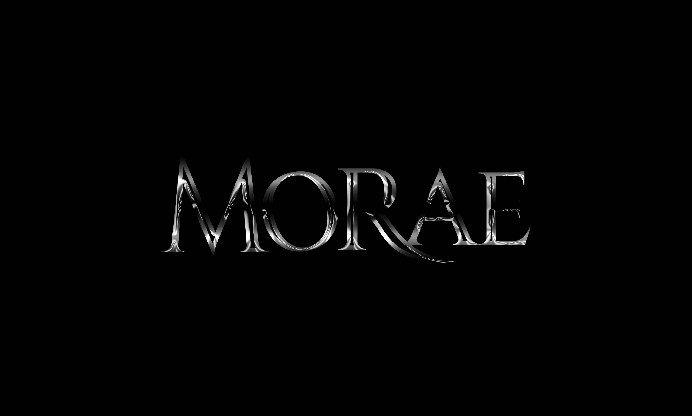
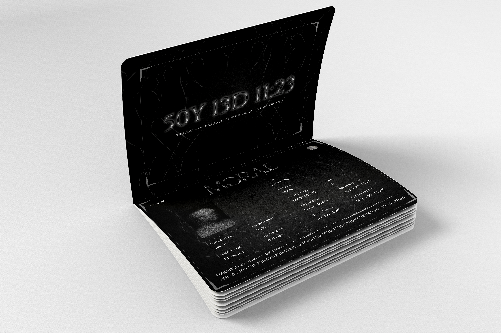
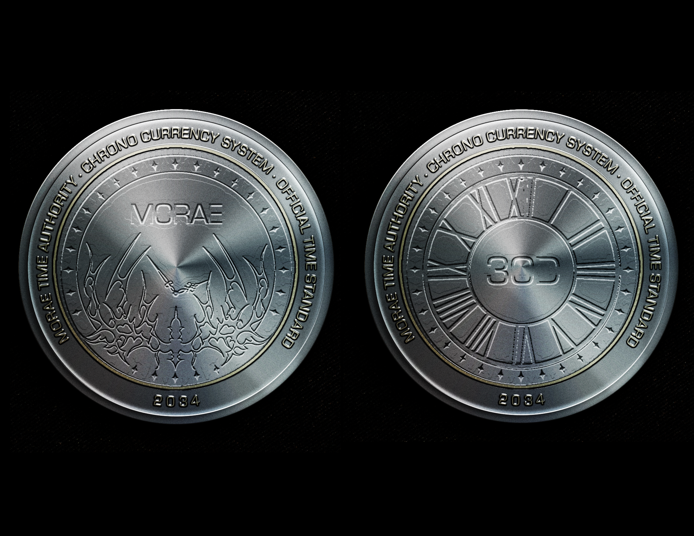

MORAE
MORAE is a speculative visual system for a fictional nation where time becomes a visible and controllable resource. Every person, object, place, and piece of information exists with a measurable lifespan. The project imagines a society where time functions like currency, shaping identity, value, and existence.
Concept
What if your remaining lifetime was visible?
In MORAE, time is no longer invisible. It is counted, stored, exchanged, and optimized. A passport displays the remaining lifespan of a citizen, a coin turns time into money, and a digital portal allows people to track and manage their time like a financial account. Through these objects and interfaces, the project imagines a society where time becomes the most important social value. Identity, status, and existence are all defined by how much time remains and how efficiently it is used.
Passport
The passport acts as an official identity document in MORAE. Instead of only showing nationality, name, and date of birth, it displays the remaining lifespan of the citizen. Time becomes part of personal identification. The document turns duration into something visible, measurable, and controlled by the system.

Currency
The currency system visualizes time as money. Each coin represents a specific amount of time, suggesting a world where days, months, and years can be stored, exchanged, and spent. By treating time as currency, MORAE questions how value would change if human life could be divided into measurable units.

Digital Interface
The digital interface functions like a bank account for time. Users can view their remaining lifespan, track daily usage, check transaction history, and receive optimization suggestions. The portal translates the abstract idea of time into data, charts, warnings, and system feedback. It shows how personal existence could become something constantly monitored and managed.